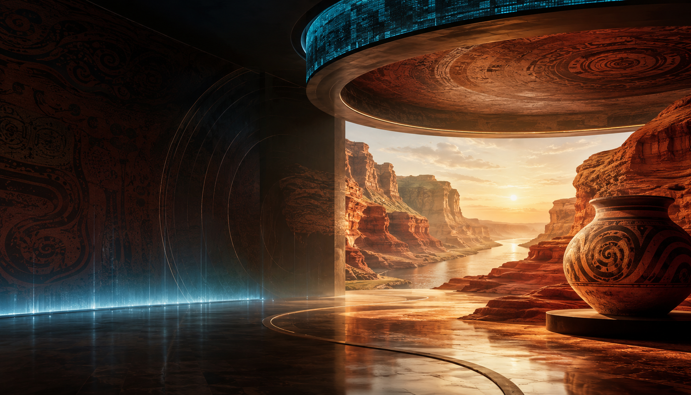

Opening Image
黑色展厅里，一只彩陶罐照亮黄河峡谷。
第一眼先看见陶纹和山体，随后进入遗址、丹峡、会盟台与街巷生活。渑池的时间感从暗处推到眼前。
 渑池数字志
渑池数字志

Digital Curation
把仰韶陶纹、黄河丹峡、会盟旧事和街巷烟火放进同一座线上展厅，让一座县城的记忆在滚动中层层亮起。
Opening Image
第一眼先看见陶纹和山体，随后进入遗址、丹峡、会盟台与街巷生活。渑池的时间感从暗处推到眼前。
County Colors
Moving Moments
Story Rhythm
Exhibition Rooms
首页总览渑池的气质，仰韶页讲文明起点，山水页安排路线，烟火页把视线带回人的生活。
Visitor Path
想看文化，就进仰韶；想看山水，就走丹峡；想带走一份计划，就在烟火页写下自己的行程。